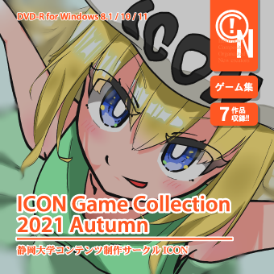

このページについて
2021年11月14日（日）に秋葉原UDXで開催された「デジゲー博」のICONブース（X-07）にて、「ICON Game Collection 2021 Autumn」を購入された方向けのサポートページです。
2021/11/16：ゲームNo.02「QubeFall」のバグについて
ゲームNo.02「QubeFall」にて、
・ネームエントリーが正常にできないバグ
・一部条件においてBGMが停止しないバグ
確認しております。近日中に修正パッチを配布しますので、しばらくお待ち下さい。
リンク集
(c) 2021 静岡大学コンテンツ制作サークルICON all rights reserved.